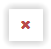

Gera uma lista ítens de GAB canceladas com a opção de serem desfeitos os seus cancelamentos.
Ao clicar no ítem de menu à esquerda Desfazer Cancel. de GAB é exibida a tela 'Desfazer Cancelamento de GAB' que apresenta uma lista com os ítens de GAB com o estado: 'Cancelada', conforme imagem abaixo:

Caso o usuário queira cancelar uma apresentação GAB este deve clicar no botão  e, em seguida, confirmar o cancelamento.


Após a operação de cancelamento será mostrada uma mensagem de confirmação ao usuário, coforme imagem abaixo:

Caso o usuário clique no botao  , sem preencher o campo de justificativa, a seguinte mensagem é mostrada ao usuário:
, sem preencher o campo de justificativa, a seguinte mensagem é mostrada ao usuário: